01 / ADAPTIVEОдин характер.
Один характер.
Любой экран.
Интерфейс Zephyron адаптируется к разным размерам экрана и сохраняет знакомую логику на Windows, macOS и Android.
WINDOWSmacOSANDROID

Просто быть на связи.
Мессенджер для разговоров без визуального шума — на компьютере и телефоне.
V26.0.2Frost Blur. Оптимизация. Блокировки.Только то, что помогает оставаться на связи. Всё остальное отходит на второй план.
Интерфейс Zephyron адаптируется к разным размерам экрана и сохраняет знакомую логику на Windows, macOS и Android.
Данные между приложением и сервисом передаются через защищённое TLS-соединение. Это защита транспорта, без заявления о сквозном шифровании.
Подробнее о данныхBCT помогает уменьшать задержку и дольше удерживать соединение при включённом VPN.
О технологииМягкое движение, спокойная типографика и минимум отвлекающих деталей.
Ближе к своим. Дальше от лишнего.
Плавающие панели. Мягкие капсулы. Знакомый Zephyron.
Интерфейс остаётся на фоне. Люди — на первом плане.
Windows, macOS или Android — выбирай своё устройство.
Настоящий интерфейс Windows V26.0.2 — с новым эффектом Frost Blur. Скриншоты других платформ добавим позже.
Windows · V26.0.2 · Frost Blur
Открыть скриншот Windows ↗Три платформы. Один Zephyron.
Windows уже доступен. Версии для macOS и Android добавим позже.